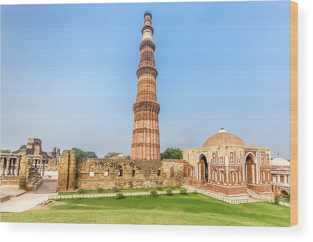

Delhi is of great historical significance as an important commercial, transport,
and cultural hub, as well as the political centre of India. According to legend,
the city was named for Raja Dhilu,
a king who reigned in the region in the 1st century bce.
popular places in Delhi
 India Gate :-
India Gate :- India Gate is counted amongst the largest war memorials
in India and every Republic Day, the Prime Minister visits the gate to pay
their tributes to the Amar Jawan Jyoti, following which the Republic Day parade starts.
India Gate is often a location for civil society protests, and is popular with tourists.

Qutub Minar:-
Qutb Minar is the tallest masonry tower in India, measuring 72.5 metres high,
with projecting balconies for calling all Muadhdhin to prayer. An iron pillar
in the courtyard gave the mosque a unique Indian aesthetic.
most languages used : Hindi and Punjabi food :Paranthas at Paranthe Wali Gali , Chole Bhature
 Lotus Temple :-
Lotus Temple :-
The Lotus Temple, located in Delhi, India, is a Bahá'í House of Worship that was
dedicated in December 1986, costing $10 million. Notable for its flowerlike shape,
it has become a prominent attraction in the city.
 Akshardham Temple:-
Akshardham Temple:-
Akshardham Temple of Delhi is one of the prime attractions in Delhi
where one can witness exclusive architectural charm with more than 234
beautifully carved pillars, 9 elaborate domes,
20 quadrangle spires and 20000 sculptures of spiritual personalities from India
Additional Place in Delhi for visit
*Red Fort (Lal Qila):
A historic fort and a UNESCO World Heritage Site, known for its stunning architecture.
*Chandni Chowk:
One of the oldest and busiest markets in Old Delhi, offering a vibrant shopping and culinary experience.
*Connaught Place:
A popular shopping and commercial center with colonial-era architecture.
*Humayun's Tomb:
Another UNESCO World Heritage Site, it is the tomb of the Mughal Emperor Humayun.
* Gurudwara Bangla Sahib::
A prominent Sikh gurudwara known for its sacred pond and community kitchen.

piyush chaubey :- for hiring or about me click the link :-
Piyush portfolio
prashant dwivedi :- for hiring or about me click the link :-
Prashant portfolio
Contact us: xyz@gmail.com
© copyright reserved since 2023